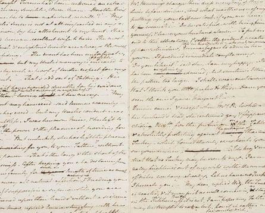

The city of Bath does not fight shy of promoting its Jane Austen connections, tempting in visitors from around the world by organising tours, balls, afternoon teas and writing and embroidery workshops inspired by the author. If you have the inclination, you can buy souvenirs ranging from Jane Austen Top Trumps to a Mr Darcy rubber duck.
But in this, the 250th anniversary year of her birth, an exhibition is being launched daring to point out that in truth Austen wasn’t terribly happy during the five years she lived in the city.
Called The Most Tiresome Place in the World: Jane Austen & Bath, the exhibition at the museum and venue No 1 Royal Crescent highlights the rather miserable time she had in the Georgian city.
Although she disliked Bath, Jane Austen used the city extensively as backdrops in two of her novels, Persuasion and Northanger Abbey.Photograph: Ben Birchall/PA
Izzy Wall, the curator for the exhibition, said: “Bath is known for Jane Austen and I think just about every organisation in Bath, including us, use it. We benefit from the association. But she didn’t like living in the city. She’s got lots of not particularly pleasant things to say about it.”
When Austen was told the family were moving from Hampshire to Bath, she is said to have fainted. “How much that is exaggerated, we’ll never know, but it’s a good story,” Wall said. “She was pulled up from her lovely idyllic country life into a big smoky city.
“We look at Bath today as a beautiful, historic town but in Austen’s time it was still a building site in places. Every house had a smoking chimney and it was lacking in proper sewage. Parts of it, at least, wouldn’t have been the nicest place to be.”
A manuscript of Jane Austen’s unfinished novel The Watsons, which is going on display in Bath in an exhibition looking at her time in the city.Photograph: The Bodleian Libraries, University of Oxford,
Austen lived in Bath between 1801 and 1806 . In a letter she wrote that features in the exhibition, she described her first view of Bath as “all vapour, shadow, smoke & confusion”.
There was grief in 1805 when Austen’s father caught a fever in Bath and died. “He was frail,” said Wall, “but it was out of the blue, a heartbreaking thing for Jane Austen. Her father was loving and kind and really supportive of her writing. It also meant financial insecurity for the family.”
Wall said Austen barely wrote when she was in Bath. “The only thing she wrote was the start of a novel called The Watsons. She had a go at writing but didn’t get very far.”
Visitors will see a segment of The Watsons manuscript, borrowed from the the Bodleian Libraries in Oxford. It is thought to be the first time it has returned to Bath since Austen wrote it.
Wall said that after the family left Bath for Chawton in Hampshire, Austen became productive again. A letter Austen wrote in 1808 that also appears in the show describes her “happy feelings of Escape!” after leaving Bath.
Though she didn’t like Bath, that doesn’t mean she wasn’t inspired by it. She had visited before the family moved and used the city extensively as backdrops in two of her novels, Persuasion and Northanger Abbey.
Wall said Bath was a key place for Austen. “She was absorbing everything, watching and weaving it into her narratives.” She said fans loved walking in the streets Austen knew. “But we want to lift the lid, scratch the surface and look into the complex relationship she had with the city.”
The title for the exhibition is taken from a conversation in Northanger Abbey between Catherine Morland and Henry Tilney when he says: “For six weeks, I allow Bath is pleasant enough; but beyond that, it is the most tiresome place in the world.”
As well as the exhibition, the house will be running tours, talks and events in a programme funded by the National Lottery Heritage Fund.